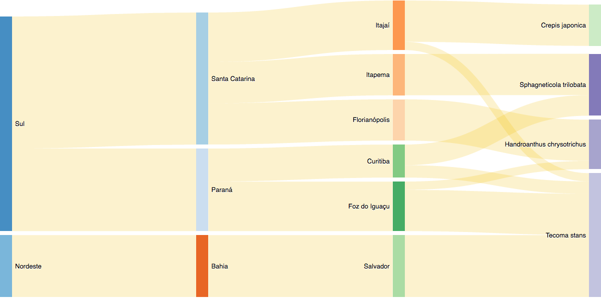

Espécies de plantas visitadas por Espécie de abelha Determinador
Selecionar Região:

Referências Bibliográficas:
Barth, O. M., & Barbosa, A. F. (1972). Catálogo sistemático dos pólens das plantas arbóreas do Brasil meridional XV. Myrtaceae. Memórias do Instituto Oswaldo Cruz, 70(4), 467-496.
Evaldt, A. C. P., Bauermann, S. G., Fuchs, S. C. B., Diesel, S., & Cancelli, R. R. (2009). Grãos de pólen e esporos do Vale do Rio Caí, nordeste do Rio Grande do Sul, Brasil: descrições morfológicas e implicações paleoecológicas. Gaea-Journal of Geoscience, 5(2), 86-106.